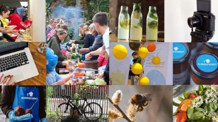
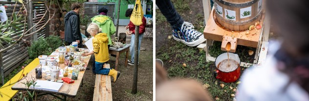

여러분은 지구를 지키는 방법 중 어떤 것을 실천하고 계시나요? 대부분 대중교통 이용, 올바른 분리배출, 일회용품 줄이기, 전기 아끼기 등을 실천하고 계실 거라 생각합니다. 여기에서 더 나아간다면 *제로 웨이스트나 옷 사지 않기 등을 하고 계실 수도 있겠고요!
저 또한 제로 웨이스트에 관심이 있었습니다.
반면 ‘음식’에는 크게 관심을 두지 않았습니다. 채식이란 채소만 먹는 것이니 내가 하기는 어려운 특별한 일이라고 생각했죠. 차라리 비행기를 타지 않고 옷을 사지 않는 것이 더 중요하다고 생각했습니다. 하지만 모든 운송 수단에서 발생하는 온실가스보다 동물성 식품 섭취와 관련해 발생하는 온실가스의 비율이 더 높다고 한다면, 믿어지시나요?
독일에는 식단을 바꾸어 탄소 배출을 줄이자는 축제가 있습니다. 바로 프랑크푸르트 암 마인에서 열리는 ‘기후 미식 축제(Klimagourmet Festival)’입니다. 프랑크푸르트 암 마인은 2035년까지 **기후 중립을 달성하겠다는 목표를 세웠습니다. 기후 미식 축제는 그 일환이라고 볼 수 있죠.
(출처: https://frankfurt.de/english/editors-pick/klimagourmet-21)
프랑크푸르트시 홈페이지에 따르면, 기후 미식 축제는 2014년에 시작되었습니다. 기후 미식 축제는 지속 가능한 즐거움 ∙ 기후 보호 ∙ 지역 경제 활성화를 위해 열리는 축제이죠. 이 축제는 우리 인간들과 지구에 사는 다른 생명체들이 모두 지구에서 오래 잘 사는 것을 목표로 합니다. 기후 변화가 심해진다면 지구에 사는 생명체들뿐 아니라 우리의 미래도 위태로워지기 때문이죠.
(출처: ©Holger Menzel / Klimagourmet)
다만 작년에는 축제 대신 ‘Familen Sonntag’라는 행사가 진행됐습니다. 프랑크푸르트의 도시 농장에서 열린 행사였죠. 이 행사에서는 도시 농장 둘러보기, 협동 경기, 퀴즈, 사과 주스 만들기 등의 프로그램이 진행됐어요.
(출처: https://www.klimagourmet.de/veranstaltungen/festival-22/)하지만 2022년까지는 ‘축제’라는 이름에 걸맞게 수일에 걸쳐 축제가 진행되었습니다. 전시회, 패널 토론, 전문가의 기후 강연 외에도 다양한 참가 프로그램이 준비되었죠.
2022년 열린 축제의 프로그램을 조금 더 구체적으로 살펴볼까요?
워크숍으로는 남는 식재료 활용 방법 배우기, 기후 친화적인 아동 식단 직접 만들어 보기, 기후 친화적인 간식을 만들고 평가한 뒤 학교 식당에서 이런 간식을 제공할 수 있을지 논의하기 등이 있었어요.
전시회로는 내가 먹는 음식들의 탄소 발자국을 확인할 수 있는 기후 미식 전시회가 있었고요.
영화 상영과 파티도 했습니다. 영화를 보며 남아메리카 전통 옥수수빵인 아레파, 인도의 처트니 소스, 비건 간식 등을 먹을 수 있었죠. 파티에서는 창의적이고 맛있는 다양한 비건 요리들을 맛볼 기회가 주어졌습니다. 지역 와인을 시음하는 파티나 무알코올 음료를 시음하는 파티 등 다양한 파티가 있었어요.
한편, 축제에서는 다양한 비건 음식이 제공됩니다. 계란과 버터가 들어가지 않은 케이크, 비건 시그니처 베이글, 샐러드, 비건 카레, 정제 설탕이 들어가지 않은 착즙 주스 등 여러 식당에서 요리를 제공하죠. 남는 음식은 모두 기부하기 때문에 음식물 쓰레기를 최소화할 수 있다고 하네요.
독일의 기후 미식 축제, 어떠셨나요? 저는 기후 문제를 해결하기 위해 음식 문화부터 기후 친화적으로 바꾸어 나가는 프랑크푸르트의 노력이 인상깊었습니다.
여러분도 기후 미식 축제 기간에 독일을 방문할 일이 있다면 참가해 봐도 좋겠습니다. 다양한 프로그램을 통해 독일의 음식 문화와 지속 가능한 식습관을 즐겁게 알아볼 수 있을 겁니다!
독일 기후 미식 축제 공식 홈페이지
기후 미식 온라인 전시회
* 제로 웨이스트: 모든 제품을 재사용하여 폐기물을 없애는 것
** 기후 중립: 온실가스(탄소)의 실질적 배출량이 0이 된 상태